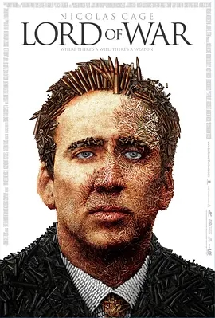
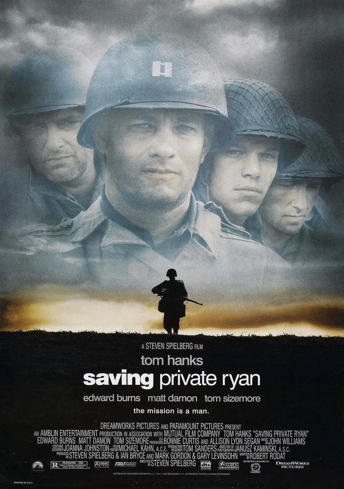
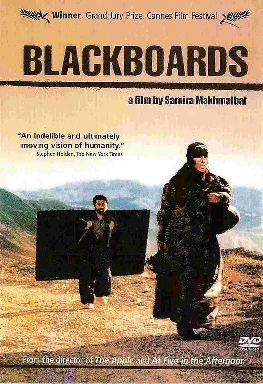
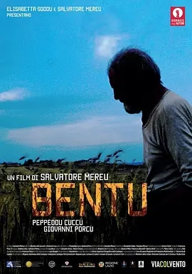

 本来美国移民尤瑞（尼古拉斯•凯奇 Nicolas Cage 饰）的家族生意是开饭馆。但是一个偶然的机会令他踏入了军火生意的大门， 从此开始了贩卖武器的“职业生涯”。尤瑞遇事机智，胆大心细，这不仅让他成功俘获了美女埃娃的心，还使得他在地下军火生意中愈战愈勇。 但是，不顺心的事情也随之而来：出现了生意上的死对头和一名老是盯着他的国际警察；弟弟染上毒瘾，并在一单生意交易中丧了命，而且，尽管他在竭力维护自己在家庭里的正义形象，但却掩盖不了真相。尤瑞开始反省自己生意的正义性，拷问自己的良心，但一切太迟，他已经众叛亲离……
 瑞恩（马特•达蒙 Matt Damon饰 ）是二战期间的美国伞兵，被困在了敌人后方。更不幸的是，他的三个兄弟全部在战争中死亡，如果他也遇难，家中的老母亲将无依无靠。 美国作战总指挥部知道了这个情况，毅然决定组织一个小分队前往救援，其中包括米勒上尉（汤姆•汉克斯 Tom Hanks 饰 ）和翻译厄本（杰里米.戴维斯 Jererry Davies饰）。然而，敌方危险重重，他们一路上随时与死亡打交道。他们非常怀疑，到底值不值得冒着八个人的生命危险，去搭救一个人。 大家一路辗转寻找瑞恩，对于这次搭救行动，有人不满，有人热忱，有人好奇。大家一次次闻到死神的气息，瑞恩的获救付出了沉重的代价。
 在两伊战争时期，一群逃难的教师背着黑板在荒原上行走，他们中间有一个叫萨义德（萨义德•莫哈默迪Said Mohamadi 饰）的男人，胸怀非常远大的抱负， 那就是让村里的孩子都能阅读，通过知识改变自己的命运，摆脱窘迫的困境。为此，他放弃了跟富家女成亲的机会，毅然决然地踏上了教授孩子读书的道路。他和同伴为了生计，脱离了大部队。 萨义德后来终于收了一位好学的弟子，在成年人赌博的时候，他教弟子写下名字、爱等字眼，然而谁想师徒二人遭到飞来横祸……萨义德的同伴遇到了一群迷路的伊拉克难民，后者出钱要他做向导，从此他的人生轨迹得以转变。这两个教师多舛的命运仿佛是那个时代挥之不去的阴影…… 本片获得第56届戛纳国际电影节获评委会奖。
来自印度北方小镇的苏丹遇见了摔角教练的女儿，苏丹为了心仪女孩，不仅开始学起摔角，在短时间内就获得地方冠军，展现了他的决心和天分。他不但娶得美人归，还和妻子一起代表印度参加奥运， 但就在苏丹获得奥运金牌的同时，他却因为骄傲自大而失去了挚爱的家庭，唯一能赢回妻子芳心的办法，就是站回属于他的舞台。
 拉菲尔刚刚收获了他的小小麦，这将是一整年的收成。为了不让他措手不及，他在乡下睡了好几天，远离所有人，等待风的到来，帮助他最终把稻草和谷物分开。但是风不想让人看见。 只有安吉利诺每天都来看他，这样他才不会感到不那么孤独。也许有一天，当他长大了，拉斐尔可以把他那匹无畏的母马借给他，他就可以骑了。但安吉利诺不想再等了。
在非洲游历了一圈之后，纽约中央公园的四位明星们继续着回到纽约，回到中央公园的旅程。不过，只要旅途中有猩猩和那群企鹅的“帮忙”，旅程就没有想象中的那么顺利。 在蒙特卡洛的一家赌场里，由于大家的耍宝，大闹赌场，进而招致了心狠手辣的动物管理局上尉杜波依斯（弗兰西斯·麦克多蒙德 Frances McDormand 配音）的围追堵截。为了逃过追捕， 大家逃进了一个在欧洲进行巡回演出的马戏团。在马戏团里，大家延续着“马达加斯加”式的幽默，笑料百出。虽然，欧洲这一路上的旅行并不顺利，不断受到杜波依斯上尉的追捕威胁，不过大家一直怀揣着回到纽约， 回到纽约中央公园的梦想。在马戏团，还帮助了东北虎维塔利（布莱恩·科兰斯顿 Bryan Cranston 配音）、美洲虎吉亚（杰西卡·查斯坦 Jessica Chastain 配音）以及海狮斯蒂芬诺（马丁·肖特 Martin Short 配音）重拾对马戏表演的信心。